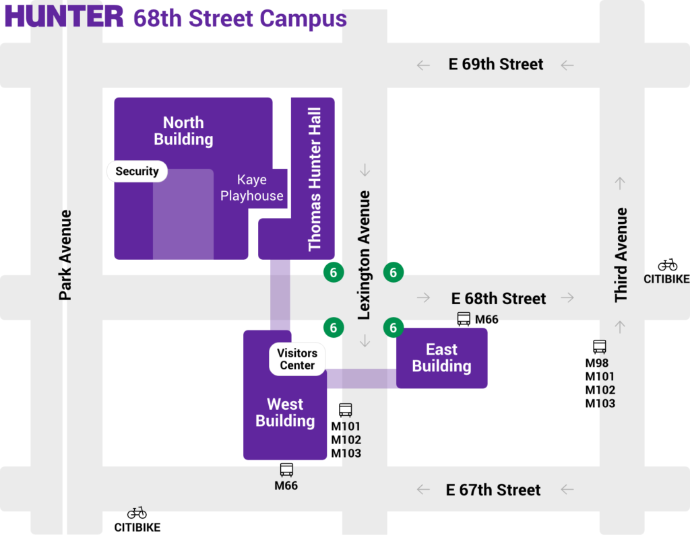
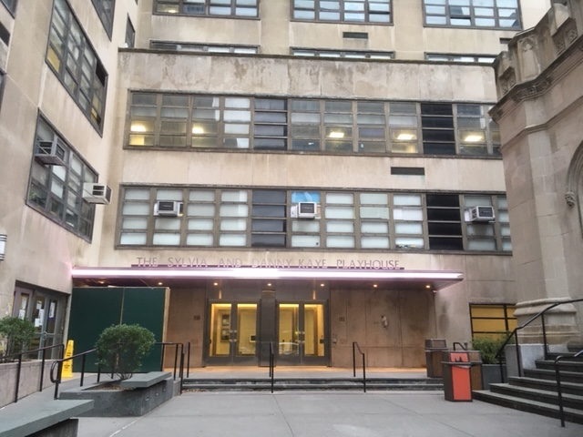
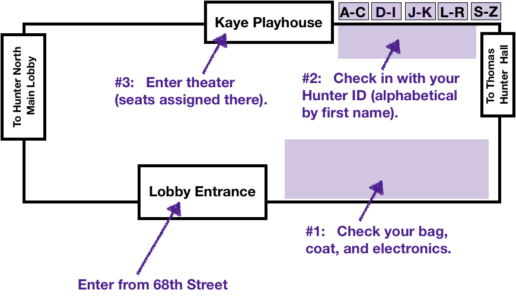
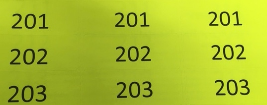

Revised Information for the FINAL EXAM
New Location:
The our exam has been moved to:
9-11am, Monday,
16 December
The Kaye Playhouse

The easiest way to reach the Kaye Playhouse is to enter Hunter North building from 68th Street. The entrance to the building has been under construction and reopened last week:

While the exam starts at 9am, arrive by 8:30am, to allow time to find the Playhouse, check your bag & electronics, check-in with your ID, and to be assigned a seat.
When You Arrive:

After you enter the lobby:
- Check your bag, coat, & electronics: There is limited space in the Kaye Playhouse-- no bags, coats, electronics, food or drink are allowed inside. Place all electronics inside your bag (or if you don't have a bag with you, ask the proctor for an envelope).
We have sets of stickers printed with unique numbers:

The proctor will put a sticker on your bag, a sticker on your coat, and a sticker for you. That sticker is needed to reclaim your bags-- place on yourself so you will have it to claim your checked items.
- Check-in with your ID (alphabetically by first name): Have your ID ready for the proctor to check. The roster is divided into 5 separate clipboards, alphabetically by first name, to make the lines go faster.
- Enter Playhouse to be assigned seat: When you enter, proctors will direct you to your seat.
During the Exam:
Due to the limited space in the theater, the exam rules have been updated:
- No food or drink is allowed in the Kaye Playhouse.
- There is not much extra room in the Playhouse: Check all bags, coats, and electronics with the bag check in the lobby.
- You should have with you: your Hunter ID, your 1-page of notes (8.5" x 11", front & back, no flaps/origami), and pens or pencils.
- There are 4 different versions of the exam and a recorded seating chart. The exams next to you will be different than yours.
Do not copy another student's exam or allow yours to be copied. BOTH students involved in any plagiarism will fail the exam and be reported to the Office of Student Conduct.
Cover your work with your note sheet as you go to discourage wandering eyes.
- No reentry after the exam has started. Use the facilities before entering.
- You must start the exam by 9:30am.
- You cannot leave the exam until all students have started (about 9:45am).
- When you are seated, make sure to fill out your name, email, and sign the front of your exam before starting.
After the Exam:
- Monday:
- The exams and answer keys will be available about noon on this webpage.
- We clip the corners of the exams (why we ask that you put your EmpID on the tops of the inside pages) and scan into Gradescope.
- Once the exams are scanned, the graders work together to complete the first pass of grading. Each subproblem (across all versions) is graded by the same grader. We usually finish the first pass late Monday afternoon.
- Tuesday:
- We make a second grading pass on Tuesday and release the exams (on Gradescope) and overall grades (on Blackboard) early Tuesday evening.
- Also on Tuesday, we will have the grading rosters and will confirm grading options (since CR/NC grading option is not always available depending on major and academic standing).
- Thursday: If you notice any problems that you would like regraded, submit a regrade request for that subproblem by Thursday noon.
- Friday: We submit grades to CUNYFirst noon Friday. Grades appear on your transcripts in about 1-3 business days.